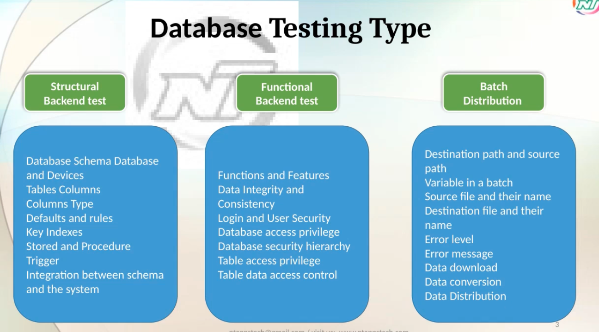

Postman API Testing
Key options explained
- 1. check reponse codes 2. check response json schema 3. create enviroments variable 4. there will be different enviroments, automation scripts should be capable of running in different enviroments by itself. 5. Functional automation - example create add book get its id then compare from get book api to check if same id is returning the same details. 6. check book id logic, isbn and aisle. 7.try catch error should be present. 8. data driven -add 200 books from excel to database. 9. run form cli. 10. collaborate as team.
- Environment variables in Postman are named values that we store once and reuse across requests, and that can change depending on which environment we are working in. examples Variable Dev environment Production environment baseURL https://dev.api.com https://api.com token dev123 prod456
- Variable Scope 1. Global - common for postman entire workspace 2. Collection - within that collection and its requests 3 Environment - uat, qa 4. data - when data driven testing is done. 5. Local - only within the request. not much use. 6. Preference order is reverse. local> data> enviroment> collection > Global
- scripting in postman pre and post request tests any postman api can be called via pm object.
-
pm.test('Status code is 200', function () { pm.response.to.have.status(200); pm.expect(responseData).to.have.property("Msg") pm.expect(responseData.Msg).to.eql("Book Already") }) - Company rule to create vairable like isbn
-

-

- Schema ?
- Newman CI CD Jenkins
- A workspace is a shared space where you organize all your API work in one place. Think of it like a project folder or a desk: everything related to a particular project or team (your API requests, collections, environments, tests, and documentation) lives there.
- A collection in Postman is a group of saved API requests organized together, like a playlist for your API calls. Instead of keeping requests scattered, you put related ones in a collection so you can find, reuse, run, and share them easily. Collections can also contain folders to organize requests further. For example, a “User API” collection might have: Folder: Authentication Login request Logout request Folder: Profile Get user details Update user details Delete user
- Every environments will have different server.
- Contract is required to start api testing
- Schema is the structure of the data, what is should contains, A book’s schema might say: ID must be a string Name must be a string Pages must be a number Msg is optional
- validate schema check return type string json response is matching with schema